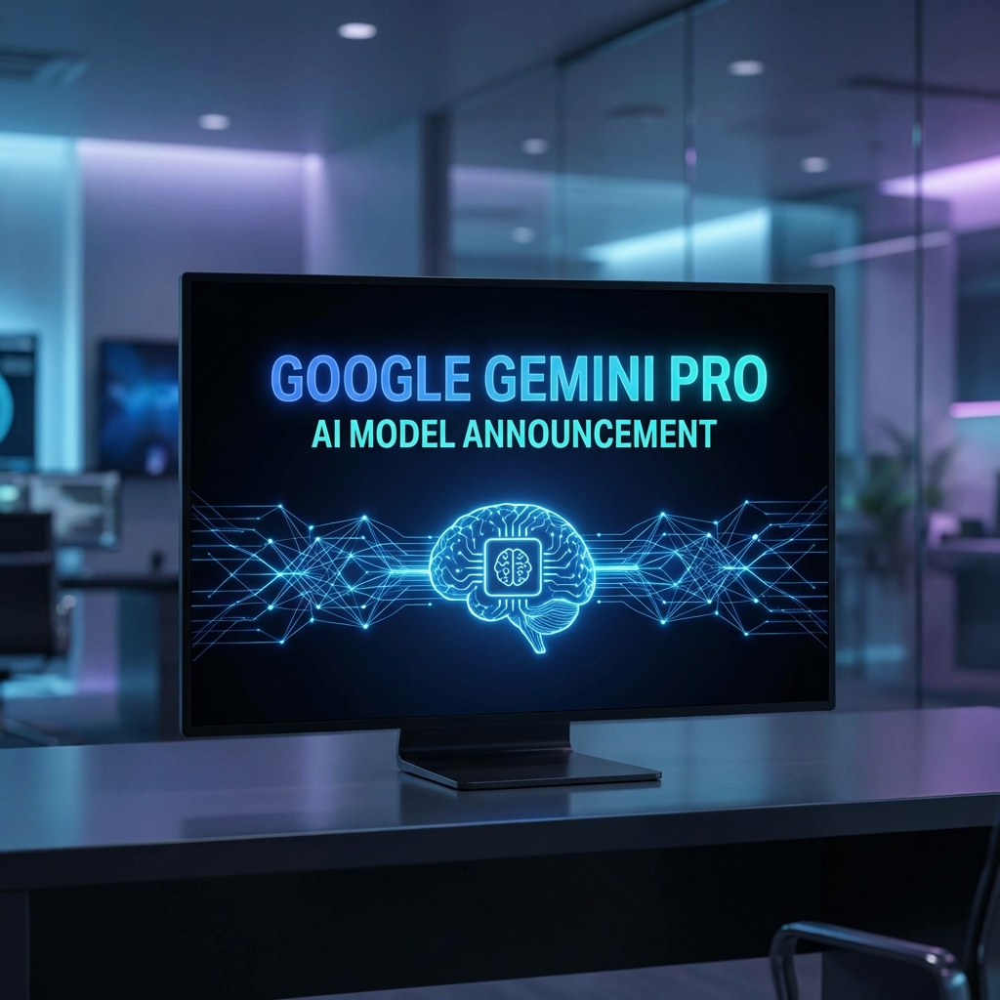

Google's Gemini Pro has pushed to the top end of language model performance, and the bigger story is what that means for daily tools. This isn't just about benchmark numbers — it's about whether AI assistants will finally feel less like demos and more like real operators you can actually rely on.
What Actually Changed
Gemini Pro is now leading on reasoning, coding assistance, and multi-step task completion. Better reasoning means fewer "I think you meant..." moments where the model confidently gets it wrong. Better coding help means the suggestions actually compile and fit your context, not just generic Stack Overflow snippets. The real shift is tighter integrations: Google is embedding this everywhere — Workspace, Cloud, Android, Chrome. That means the AI is present where you already work, not siloed in a chat window you have to remember to open.
The Upside: Genuine Productivity
For normal users, this translates to AI that actually accelerates work instead of adding friction. Drafts that need less rewriting. Code suggestions that fit your project structure. Research summaries that capture the key points instead of hallucinating sources. If you pick tools carefully and stay practical — treat AI as an accelerator, not a replacement for thinking — this wave of improvement can genuinely improve output quality and turnaround time.
The Risk: Lock-In and Speed
The risk here is twofold. First, lock-in. If Google's AI becomes deeply embedded in your workflows, extracting yourself later becomes expensive. Second, speed-induced mistakes. Faster generation without guardrails just means faster bugs, faster wrong decisions, faster cleanup. The vendors are moving fast. Your job is to move deliberately — adopt what genuinely helps, ignore the hype, and maintain standards regardless of how slick the tool looks.

Source: TechCrunch AI
Original report
— Howard